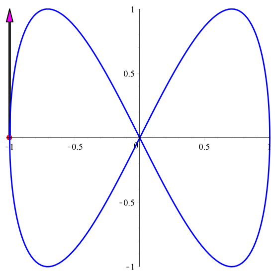
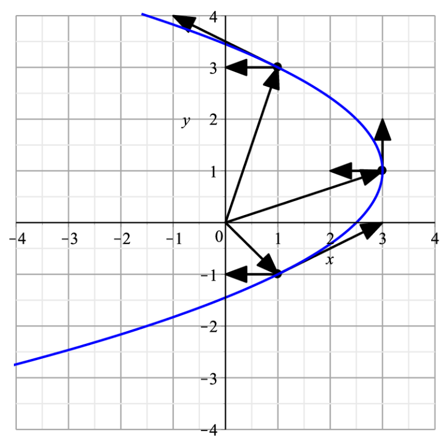
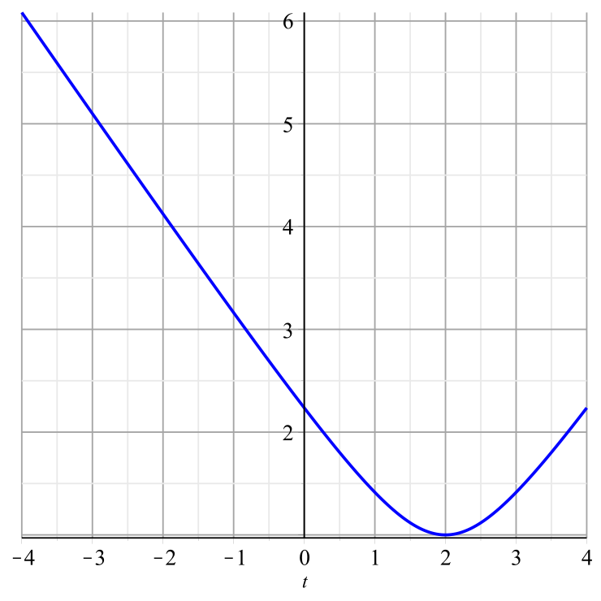
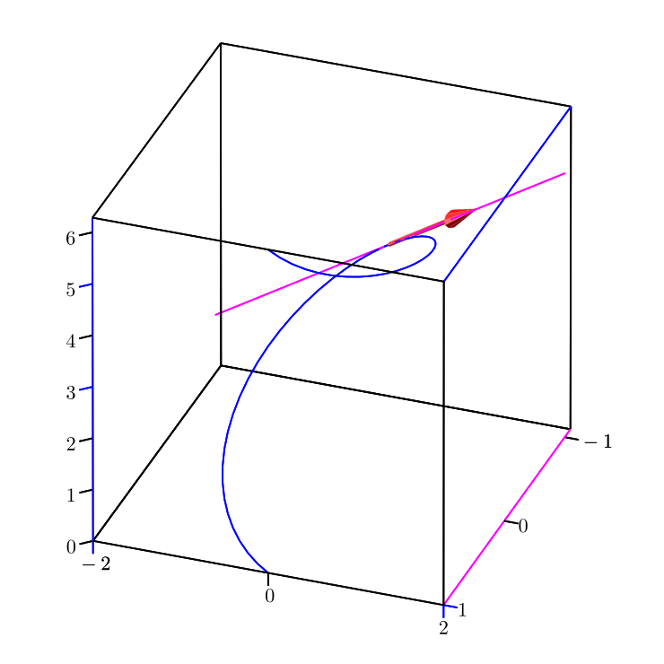

Section10.2Derivatives and Integrals of Vector-Valued Functions
Motivating Questions
What do we mean by the derivative of a vector-valued function and how do we calculate it?
What does the derivative of a vector-valued function measure?
What do we mean by the integral of a vector-valued function and how do we compute it?
How do we describe the motion of a projectile if the only force acting on the object is acceleration due to gravity?
A vector-valued function \(\vr\) determines a curve in space as the collection of terminal points of the vectors \(\vr(t)\text{.}\) If the curve is smooth, it is natural to ask whether \(\vr(t)\) has a derivative. In the same way, our experiences with integrals in single-variable calculus prompt us to wonder what the integral of a vector-valued function might be and what it might tell us. We explore both of these questions in detail in this section.
For now, let’s recall some important ideas from calculus I. Given a function \(s\) that measures the position of an object moving along an axis, its derivative, \(s'\text{,}\) is defined by
and measures the instantaneous rate of change of \(s\) with respect to time. In particular, for a fixed value \(t = a\text{,}\)\(s'(a)\) measures the velocity of the moving object, as well as the slope of the tangent line to the curve \(y = s(t)\) at the point \((a,s(a))\text{.}\)
As we work with vector-valued functions, we will strive to update these ideas and perspectives into the context of curves in space and outputs that are vectors.
Preview Activity10.2.1.
Let \(\vr(t) = \cos(t) \vi + \sin(2t) \vj\) describe the path traveled by an object at time \(t\text{.}\)
Use appropriate technology to help you sketch the graph of the vector-valued function \(\vr\text{,}\) and then locate and label the point on the graph when \(t=\pi\text{.}\)
Recall that for functions of a single variable, the derivative of a sum is the sum of the derivatives; that is, \(\frac{d}{dx}[f(x) + g(x)] = f'(x) + g'(x)\text{.}\) With this idea in mind and viewing \(\vi\) and \(\vj\) as constant vectors, what do you expect the derivative of \(\vr\) to be? Write a proposed formula for \(\vr'(t)\text{.}\)
Use your result from part (b) to compute \(\vr'(\pi)\text{.}\) Sketch this vector \(\vr'(\pi)\) as emanating from the point on the graph of \(\vr\) when \(t=\pi\) , and explain what you think \(\vr'(\pi)\) tells us about the object’s motion.
Solution.
The graph of \(\vr(t)\) is shown below, with the point \((-1,0)\) at \(t=pi\) indicated as the solid point on the graph.
If the derivative of a sum is the sum of the derivatives, then we should expect that
Using our rule for \(\vr'(t)\) we have \(\vr'(\pi) = 2 \vj\text{.}\) A sketch of this vector \(\vr'(\pi)\) as emanating from the point on the graph of \(\vr\) when \(t=\pi\) is shown below. This looks like a direction vector for the line tangent to the graph of \(\vr\) at the point where \(t = \pi\text{.}\) In other words, this vector \(\vr'(t)\) is the velocity vector of the object at time \(t = \pi\text{.}\)

Subsection10.2.1The Derivative
In single variable calculus, we define the derivative, \(f'\text{,}\) of a given function \(f\) by
provided the limit exists. At a given value of \(a\text{,}\)\(f'(a)\) measures the instantaneous rate of change of \(f\text{,}\) and also tells us the slope of the tangent line to the curve \(y = f(x)\) at the point \((a, f(a))\text{.}\) The definition of the derivative extends naturally to vector-valued functions and curves in space.
Definition10.2.1.
The derivative of a vector-valued function \(\vr\) is defined to be
for those values of \(t\) at which the limit exists. We also use the notation \(\frac{d\vr}{dt}\) and \(\frac{d}{dt}[\vr(t)]\) for \(\vr'(t)\text{.}\)
Activity10.2.2.
Let’s investigate how we can interpret the derivative \(\vr'(t)\text{.}\) Let \(\vr\) be the vector-valued function whose graph is shown in Figure 10.2.2, and let \(h\) be a scalar that represents a small change in time. The vector \(\vr(t)\) is the blue vector in Figure 10.2.2 and \(\vr(t+h)\) is the green vector.
Figure10.2.2.A single difference quotient.
Is the quantity \(\vr(t+h)-\vr(t)\) a vector or a scalar? Identify this object in Figure 10.2.2.
Is \(\frac{\vr(t+h)-\vr(t)}{h}\) a vector or a scalar? Sketch a representative vector \(\frac{\vr(t+h)-\vr(t)}{h}\) with \(h \lt 1\) in Figure 10.2.2.
Think of \(\vr(t)\) as providing the position of an object moving along the curve these vectors trace out. What do you think that the vector \(\frac{\vr(t+h)-\vr(t)}{h}\) measures? Why? (Hint: You might think analogously about difference quotients such as \(\frac{f(x+h) - f(x)}{h}\) or \(\frac{s(t+h) - s(t)}{h}\) from calculus I.)
Figure 10.2.3 presents three snapshots of the vectors \(\frac{\vr(t+h)-\vr(t)}{h}\) as we let \(h \to 0\text{.}\) Write 2-3 sentences to describe key attributes of the vector
(Hint: Compare to limits such as \(\lim_{h \to 0} \frac{f(x+h) - f(x)}{h}\) or \(\lim_{h \to 0} \frac{s(t+h) - s(t)}{h}\) from calculus I, keeping in mind that in three dimensions there is no general concept of slope.)
Figure10.2.3.Snapshots of several difference quotients.
Solution.
The quantity \(\vr(t+h)-\vr(t)\) is a vector quantity, the vector from the terminal point of \(\vr(t)\) to the terminal point of \(\vr(t+h)\text{.}\)
The quantity \(\frac{\vr(t+h)-\vr(t)}{h}\) is a vector quantity, it is a vector in the direction of \(\vr(t+h)-\vr(t)\) that is \(\frac{1}{h}\) times as long.
The vector \(\vr(t+h)-\vr(t)\) represents a change in position of the object on the time interval \([t, t+h]\text{.}\) When we multiply by \(\frac{1}{h}\text{,}\) we can consider this vector \(\frac{\vr(t+h)-\vr(t)}{h}\) as an average change of position, or the average velocity vector of the object on the interval \([t,t+h]\text{.}\)
As \(h \to 0\text{,}\) the average velocity vectors \(\frac{\vr(t+h)-\vr(t)}{h}\) approach the instantaneous velocity vector. The average velocity vector \(\frac{\vr(t+h)-\vr(t)}{h}\) is a direction vector for the secant line to the curve that passes through the terminal points of \(\vr(t)\) and \(\vr(t+h)\text{.}\) As we let \(h \to 0\text{,}\) these direction vectors approach a direction vector
of the tangent line to the curve at the terminal point of \(\vr(t)\text{.}\)
As Activity 10.2.2 indicates, if \(\vr(t)\) determines the position of an object at time \(t\text{,}\) then \(\frac{\vr(t+h)-\vr(t)}{h}\) represents the average rate of change in the position of the object over the interval \([t,t+h]\text{,}\) which is also the average velocity of the object on this interval. Thus, the derivative
is the instantaneous rate of change of \(\vr(t)\) at time \(t\) (for those values of \(t\) for which the limit exists), so \(\vr'(t) = \vv(t)\) is the instantaneous velocity of the object at time \(t\text{.}\) Furthermore, we can interpret the derivative \(\vr'(t)\) as the direction vector of the line tangent to the graph of \(\vr\) at the value \(t\text{.}\)
is the instantaneous rate of change of the velocity of the object at time \(t\text{,}\) for those values of \(t\) for which the limits exists, and thus \(\vv'(t) = \va(t)\) is the acceleration of the moving object.
Note well: Both the velocity and acceleration are vector quantities: they have magnitude and direction. By contrast, the magnitude of the velocity vector, \(| \vv(t) |\text{,}\) which is the speed of the object at time \(t\text{,}\) is a scalar quantity.
Subsection10.2.2Computing Derivatives
As we learned in single variable calculus, computing derivatives from the definition is often difficult. Fortunately, properties of the limit make it straightforward to calculate the derivative of a vector-valued function similar to how we developed shortcut differentiation rules in calculus I. To see why, recall that the limit of a sum is the sum of the limits, and that we can remove constant factors from limits. Thus, as we observed in a particular example in Preview Activity 10.2.1, if \(\vr(t) = x(t) \vi + y(t)
\vj + z(t) \vk\text{,}\) it follows that
In first-semester calculus, we developed several important differentiation rules, including the constant multiple, product, quotient, and chain rules. For instance, recall that we formally state the product rule as
There are several analogous rules for vector-valued functions, including a product rule for scalar functions and vector-valued functions. These rules, which are easily verified, are summarized as follows.
Properties of derivatives of vector-valued functions.
Let \(f\) be a differentiable real-valued function of a real variable \(t\) and let \(\vr\) and \(\vs\) be differentiable vector-valued functions of the real variable \(t\text{.}\) Then
Note well. When applying these properties, use care to interpret the quantities involved as either scalars or vectors. For example, \(\vr(t) \cdot \vs(t)\) defines a scalar function because we have taken the dot product of two vector-valued functions. However, \(\vr(t) \times \vs(t)\) defines a vector-valued function since we have taken the cross product of two vector-valued functions.
Activity10.2.4.
The left side of Figure 10.2.4 shows the curve described by the vector-valued function \(\vr\) defined by
Figure10.2.4.The curve \(\vr(t) = \left\langle 2t-\frac12 t^2 + 1,
t-1\right\rangle\) and its speed.
Find the object’s velocity \(\vv(t)\text{.}\)
Find the object’s acceleration \(\va(t)\text{.}\)
Indicate on the left of Figure 10.2.4 the object’s position, velocity and acceleration at the times \(t=0, 2, 4\text{.}\) Draw the velocity and acceleration vectors with their tails placed at the object’s position.
Recall that the speed is \(|\vv| = \sqrt{\vv\cdot\vv}\text{.}\) Find the object’s speed and graph it as a function of time \(t\) on the right of Figure 10.2.4. When is the object’s speed the slowest? When is the speed increasing? When is it decreasing?
What seems to be true about the angle between \(\vv\) and \(\va\) when the speed is at a minimum? What is the angle between \(\vv\) and \(\va\) when the speed is increasing? when the speed is decreasing?
Since the square root is an increasing function, we see that the speed increases precisely when \(\vv\cdot\vv\) is increasing. Use the product rule for the dot product to express \(\frac{d}{dt}(\vv\cdot\vv)\) in terms of the velocity \(\vv\) and acceleration \(\va\text{.}\) Use this to explain why the speed is increasing when \(\vv\cdot\va > 0\) and decreasing when \(\vv\cdot\va \lt 0\text{.}\) Compare this to part (d).
Notice that \(\vr(0) = \langle 1,-1 \rangle\text{,}\)\(\vr(2) = \langle 2,1 \rangle\text{,}\) and \(\vr(4) = \langle 0,3 \rangle\text{.}\) The vectors at each point are shown in the figure below at left.
Speed is the magnitude of the velocity, so the speed of the object at time \(t\) is
The speed of the object is at its least when \(t=2\text{.}\) The speed is increasing on the interval \((2,4)\) and decreasing on the interval \((-4,2)\text{.}\)


When \(t \lt 2\) in the position graph, the angle between \(\vv\) and \(\va\) is larger than \(90^{\circ}\text{.}\) When \(t \gt 2\) in the position graph, the angle between \(\vv\) and \(\va\) is less than \(90^{\circ}\text{.}\) Note that at the point when \(t=2\text{,}\) the vectors \(\vv\) and \(\va\) are orthogonal.
So the derivative of the speed is positive when \(\vv \cdot \va\) is positive and negative when \(\vv \cdot \va\) is negative. In other words, speed is increasing when \(\vv \cdot \va\) is positive and decreasing when \(\vv \cdot \va\) is negative. When \(t \lt 2\) in the position graph, the angle between \(\vv\) and \(\va\) is larger than \(90^{\circ}\) and so \(\vv \cdot \va \lt 0\text{.}\) When \(t \gt 2\) in the position graph, the angle between \(\vv\) and \(\va\) is less than \(90^{\circ}\) and so \(\vv \cdot \va \gt 0\text{.}\) Note that at the point when \(t=2\text{,}\) the vectors \(\vv\) and \(\va\) are orthogonal.
In general, if \(\vr(t) = \langle x(t), y(t) \rangle\text{,}\) then \(\vv(t) = \langle x'(t),
y'(t) \rangle\text{,}\)\(\va(t) = \langle x''(t), y''(t) \rangle\text{,}\) and the speed is \(s(t) = \sqrt{(x'(t))^2 + (y'(t))^2}\text{.}\) Recall that \(\comp_{\vv} \va = \frac{\va \cdot \vv}{|\vv|}\text{,}\) so
One of the most important ideas in first-semester calculus is that a differentiable function is locally linear: that is, when viewed up close, the curve generated by a differentiable function looks very much like a line. Indeed, when we zoom in sufficiently far on a particular point, the curve looks indistinguishable from its tangent line.
In the same way, we expect that a smooth curve in 3-space will be locally linear. In the following activity, we investigate how to find the tangent line to such a curve. Recall from our work in Section 9.6 that the vector equation of a line that passes through the point at the tip of the vector \(\vL_0 = \langle
x_0, y_0, z_0 \rangle\) in the direction of the vector \(\vu = \langle
a, b, c \rangle\) can be written as
\begin{equation*}
\vL(t) = \vL_0 + t \vu.
\end{equation*}
Determine the coordinates of the point on the curve traced out by \(\vr(t)\) when \(t = \pi\text{.}\)
Find a direction vector for the line tangent to the graph of \(\vr\) at the point where \(t=\pi\text{.}\)
Find the parametric equations of the line tangent to the graph of \(\vr\) when \(t=\pi\text{.}\)
Sketch a plot of the curve \(\vr(t)\) and its tangent line near the point where \(t = \pi\text{.}\) In addition, include a sketch of \(\vr'(\pi)\text{.}\) What is the important role of \(\vr'(\pi)\) in this activity?
The sketch below shows the curve \(\vr(t)\) and a direction vector \(\vr'(\pi)\) for the tangent line to the curve at \(t=\pi\text{.}\)

We see that our work in Activity 10.2.5 can be generalized. Given a differentiable vector-valued function \(\vr\text{,}\) the tangent line to the curve at the input value \(a\) is given by
\begin{equation}
\vL(t) = \vr(a) + t \vr'(a).\tag{10.2.1}
\end{equation}
Here we see that because the tangent line is determined entirely by a given point and direction, the point is provided by the function \(\vr\text{,}\) evaluated at \(t = a\text{,}\) while the direction is provided by the derivative, \(\vr'\text{,}\) again evaluated at \(t = a\text{.}\) Note how analogous the formula for \(\vL(t)\) is to the tangent line approximation from single-variable calculus: in that context, for a given function \(y = f(x)\) at a value \(x = a\text{,}\) we found that the tangent line can be expressed by the linear function \(y = L(x)\) whose formula is
Equation (10.2.1) for the tangent line \(\vL(t)\) to the vector-valued function \(\vr(t)\) is nearly identical. Indeed, because there are multiple parameterizations for a single line, it is even possible to write the parameterization as
(For example, in Equation (10.2.1), \(\vL(0) = \vr(a)\text{,}\) so the line’s parameterization “starts” at \(t = 0\text{.}\) When we write the parameterization in the form of Equation (10.2.2), \(\vL(a) = \vr(a)\text{,}\) so the line’s parameterization “starts” at \(t = a\text{.}\))
As we will learn more in Chapter 10, a smooth surface in 3-space is also locally linear. That means that the surface will look like a plane, which we call its tangent plane, as we zoom in on the graph. It is possible to use tangent lines to traces of the surface to generate a formula for the tangent plane; see Exercise 10.2.7.15 at the end of this section for more details.
Subsection10.2.4Integrating a Vector-Valued Function
Recall from single variable calculus that an antiderivative of a function \(f\) of the independent variable \(x\) is a function \(F\) that satisfies \(F'(x) = f(x)\text{.}\) We then defined the indefinite integral \(\int f(x) \ dx\) to be the general antiderivative of \(f\text{.}\) Recall that the general antiderivative includes an added constant \(C\) in order to indicate that the general antiderivative is in fact an entire family of functions. We can do the similar work with vector-valued functions.
Definition10.2.5.
An antiderivative of a vector-valued function \(\vr\) is a vector-valued function \(\vR\) such that
The indefinite integral \(\int \vr(t) \ dt\) of a vector-valued function \(\vr\) is the general antiderivative of \(\vr\) and represents the collection of all antiderivatives of \(\vr\text{.}\)
The same reasoning that allows us to differentiate a vector-valued function componentwise applies to integrating as well. Recall that the integral of a sum is the sum of the integrals and also that we can remove constant factors from integrals. So, given \({\vr(t) = x(t) \vi
+ y(t) \vj + z(t) \vk}\text{,}\) it follows that we can integrate componentwise. Expressed more formally,
Integrating a vector-valued function.
If \(\vr(t) = x(t) \vi + y(t) \vj + z(t) \vk\text{,}\) then
In light of being able to integrate and differentiate componentwise with vector-valued functions, we can solve many problems that are analogous to those we encountered in single-variable calculus. For instance, recall problems where we were given an object moving along an axis with velocity function \(v\) and an initial position \(s(0)\text{.}\) In that context, we were able to differentiate \(v\) in order to find acceleration, and integrate \(v\) and use the initial condition in order to find the position function \(s\text{.}\) In the following activity, we explore similar ideas with vector-valued functions.
Activity10.2.6.
Suppose a moving object in space has its velocity given by
A graph of the position of the object for times \(t\) in \([-0.5,3]\) is shown in Figure 10.2.6. Suppose further that the object is at the point \((1.5,-1,0)\) at time \(t=0\text{.}\)
Determine \(\va(t)\text{,}\) the acceleration of the object at time \(t\text{.}\)
Determine \(\vr(t)\text{,}\) position of the object at time \(t\text{.}\)
Compute and sketch the position, velocity, and acceleration vectors of the object at time \(t=1\text{,}\) using Figure 10.2.6.
Finally, determine the vector equation for the tangent line, \(\vL(t)\text{,}\) that is tangent to the position curve at \(t = 1\text{.}\)
Figure10.2.6.The position graph for the function in Activity 10.2.6.
Solution.
Since acceleration is the derivative of the velocity we have
Any time that an object is launched into the air with a given velocity and launch angle, the path the object travels is determined almost exclusively by the force of gravity. Whether in sports such as archery or shotput, in military applications with artillery, or in important fields like firefighting, it is important to be able to know when and where a launched projectile will land. We can use our knowledge of vector-valued functions in order to completely determine the path traveled by an object that is launched from a given position at a given angle from the horizontal with a given initial velocity.
Figure10.2.7.Projectile motion.
Assume we fire a projectile from a launcher and the only force acting on the fired object is the force of gravity pulling down on the object. That is, we assume no effect due to spin, wind, or air resistance. With these assumptions, the motion of the object will be planar, so we can also assume that the motion occurs in two-dimensional space. Suppose we launch the object from an initial position \((x_0, y_0)\) at an angle \(\theta\) with the positive \(x\)-axis as illustrated in Figure 10.2.7, and that we fire the object with an initial speed of \(v_0 = |\vv(0)|\text{,}\) where \(\vv(t)\) is the velocity vector of the object at time \(t\text{.}\) Assume \(g\) is the positive constant acceleration force due to gravity, which acts to pull the fired object toward the ground (in the negative \(y\) direction). Note particularly that there is no external force acting on the object to move it in the \(x\) direction.
We first observe that since gravity only acts in the downward direction and that the acceleration due to gravity is constant, the acceleration vector is \(\langle 0, -g
\rangle\text{.}\) That is, \(\va(t) = \langle 0, -g \rangle\text{.}\) We may use this fact about acceleration, together with the initial position and initial velocity in order to fully determine the position \(\vr(t)\) of the object at time \(t\text{.}\) In Exercise 10.2.7.17, you can work through the details to show that the following general formula holds.
The motion of a projectile.
If an object is launched from a point \((x_0,y_0)\) with initial velocity \(v_0\) at an angle \(\theta\) with the horizontal, then the position of the object at time \(t\) is given by
for those values of \(t\) at which \(x\text{,}\)\(y\text{,}\) and \(z\) are differentiable, where \(\vr(t) =
x(t) \vi + y(t) \vj + z(t) \vk\text{.}\)
The derivative \(\vr'(t)\) of the vector-valued function \(\vr\) tells us the instantaneous rate of change of \(\vr\) with respect to time, \(t\text{,}\) which can be interpreted as a direction vector for the line tangent to the graph of \(\vr\) at the point \(\vr(t)\text{,}\) or also as the instantaneous velocity of an object traveling along the graph defined by \(\vr(t)\) at time \(t\text{.}\)
An antiderivative of \(\vr\) is a vector-valued function \(\vR\) such that \(\vR'(t) = \vr(t)\text{.}\) The indefinite integral \(\int \vr(t) \
dt\) of a vector-valued function \(\vr\) is the general antiderivative of \(\vr\) (which is a collection of all of the antiderivatives of \(\vr\text{,}\) with any two antiderivatives differing by at most a constant vector). Moreover, if \(\vr(t) = x(t) \vi + y(t) \vj + z(t) \vk\text{,}\) then
If an object is launched from a point \((x_0,y_0)\) with initial velocity \(v_0\) at an angle \(\theta\) with the horizontal, then the position of the object at time \(t\) is given by
provided that that the only force acting on the object is the acceleration \(g\) due to gravity.
Exercises10.2.7Exercises
The WeBWorK problems are written by many different authors. Some authors use parentheses when writing vectors, e.g., \((x(t),y(t),z(t))\) instead of angle brackets \(\langle x(t),y(t),z(t) \rangle\text{.}\) Please keep this in mind when working WeBWorK exercises.
1.
If \(\mathbf{r} (t) = \cos (5 t) \mathbf{i} + \sin (5 t) \mathbf{j} - 2 t \mathbf{k}\text{,}\) compute:
A. The velocity vector \(\mathbf{v} (t) =\)\(\mathbf{i} +\)\(\mathbf{j} +\)\(\mathbf{k}\)
B. The acceleration vector \(\mathbf{a} (t) =\)\(\mathbf{i} +\)\(\mathbf{j} +\)\(\mathbf{k}\)
Note: the coefficients in your answers must be entered in the form of expressions in the variable \(t\text{;}\) e.g. “5 cos(2t)”
2.
Given that the acceleration vector is \(\mathbf{a} \left( t \right) = \left(
-16 \cos \left( 4 t \right) \right) \mathbf{i} + \left( -16 \sin
\left( 4 t \right) \right) \mathbf{j} + \left( -5 t \right) \mathbf{k}\text{,}\) the initial velocity is \(\mathbf{v} \left( 0 \right) = \mathbf{i + k}\text{,}\) and the initial position vector is \(\mathbf{r} \left( 0 \right) = \mathbf{i +
j + k}\text{,}\) compute:
A. The velocity vector \(\mathbf{v} \left( t \right) =\)\(\mathbf{i} +\)\(\mathbf{j} +\)\(\mathbf{k}\)
B. The position vector \(\mathbf{r} \left( t \right) =\)\(\mathbf{i} +\)\(\mathbf{j} +\)\(\mathbf{k}\)
Note: the coefficients in your answers must be entered in the form of expressions in the variable \emph{t}; e.g. “5 cos(2t)”
and \(\int{\mathbf{r}}(t)\, dt\)= \(\mathbf{i}+\)\(\mathbf{j}+\)\(\mathbf{k}
+ \mathbf{C}\)
with \(\mathbf{C}\) a constant vector.
6.
For the given position vectors \(\mathbf{r}(t)\text{,}\)
compute the (tangent) velocity vector \(\mathbf{r}'(t)\) for the given value of \(t\) .
A) \(\displaystyle \textrm{Let } \mathbf{r}(t)= (\cos 2t,\, \sin 2t )\text{.}\)
Then \(\mathbf{r}'(\frac{\pi}{4})\)= ( , )?
B) \(\displaystyle \textrm{Let } {\mathbf{r}}(t)= (t^2,t^3)\text{.}\)
Then \({\mathbf{r}}'(4)\)= ( , )?
C) \(\displaystyle \textrm{Let } \mathbf{r}(t)= e^{2t}\mathbf{i}+ e^{-4t}\mathbf{j}+
t\mathbf{k}\text{.}\)
Then \(\mathbf{r}'(-2)\)= \(\mathbf{i}+\)\(\mathbf{j}+\)\(\mathbf{k}\) ?
7.
Suppose \(\vec{r}(t) = \cos\!\left(\pi t\right)\boldsymbol{i}+\sin\!\left(\pi t\right)\boldsymbol{j}+3t\boldsymbol{k}\) represents the position of a particle on a helix, where \(z\) is the height of the particle.
(a) What is \(t\) when the particle has height \(9\text{?}\)
\(t =\)
(b) What is the velocity of the particle when its height is \(9\text{?}\)
\(\vec{v} =\)
(c) When the particle has height \(9\text{,}\) it leaves the helix and moves along the tangent line at the constant velocity found in part (b). Find a vector parametric equation for the position of the particle (in terms of the original parameter \(t\)) as it moves along this tangent line.
\(L(t) =\)
8.
Suppose the displacement of a particle in motion at time \(t\) is given by the parametric equations
A gun has a muzzle speed of 100 meters per second. What angle of elevation should be used to hit an object 200 meters away? Neglect air resistance and use \(g
= 9.8\, \textrm{m}/\textrm{sec}^{2}\) as the acceleration of gravity.
Answer: radians
12.
A child wanders slowly down a circular staircase from the top of a tower. With \(x,y,z\) in feet and the origin at the base of the tower, her position \(t\) minutes from the start is given by
\begin{equation*}
x=30\cos t,\quad y = 30 \sin t, \quad z = 100 - 5 t.
\end{equation*}
(a) How tall is the tower?
height = ft
(b) When does the child reach the bottom?
time = minutes
(c) What is her speed at time \(t\text{?}\)
speed = ft/min
(d) What is her acceleration at time \(t\text{?}\)
acceleration = ft/min\({}^2\)
Solution.
(a) Since \(z=100\) feet when \(t=0\text{,}\) the tower is 100 feet high. (b) The child reaches the bottom when \(z=0\text{,}\) so \(t=100/5=20\) minutes. (c) Her velocity is given by
\begin{equation*}
\vec v =\frac{d\vec r}{dt} = -(30\sin t)\vec i +(30\cos t)\vec j - 5\vec k,
\end{equation*}
\begin{equation*}
\vec a = \frac{d\vec v}{dt} = -(30 \cos t)\vec i -(30 \sin t)\vec j
\mbox{ ft/min}^2.
\end{equation*}
13.
Compute the derivative of each of the following functions in two different ways: (1) use the rules provided in the theorem stated just after Activity 10.2.3, and (2) rewrite each given function so that it is stated as a single function (either a scalar function or a vector-valued function with three components), and differentiate component-wise. Compare your answers to ensure that they are the same.
\begin{equation*}
\vw(s) = \left\langle s^2, \sin\left(\frac{\pi}{2}s\right), s \right\rangle.
\end{equation*}
Determine the point of intersection of the curves generated by \(\vr(t)\) and \(\vw(s)\text{.}\) To do so, you will have to find values of \(a\) and \(b\) that result in \(\vr(a)\) and \(\vw(b)\) being the same vector.
Use the value of \(a\) you determined in (a) to find a vector form of the tangent line to \(\vr(t)\) at the point where \(t = a\text{.}\)
Use the value of \(b\) you determined in (a) to find a vector form of the tangent line to \(\vw(s)\) at the point where \(s = b\text{.}\)
Suppose that \(z = f(x,y)\) is a function that generates a surface in three-dimensional space, and that the curves generated by \(\vr(t)\) and \(\vw(s)\) both lie on this surface. Note particularly that the point of intersection you found in (a) lies on this surface. In addition, observe that the two tangent lines found in (b) and (c) both lie in the tangent plane to the surface at the point of intersection. Use your preceding work to determine the equation of this tangent plane.
Solution.
We will need to find values of \(a\) and \(b\) so that \(a+1=b^2\text{,}\)\(\cos\left(\frac{\pi}{2} a\right) = \sin\left(\frac{\pi}{2}b\right)\text{,}\) and \(\frac{1}{1+a} = b\text{.}\) The first equation tells us that \(a = b^2-1\text{.}\) Substituting into the third equation results in
This equation is satisfied when \(b^3=1\) or when \(b=1\text{.}\) This makes \(a=0\text{.}\) Note that the second equation is also satisfied when \(a=0\) and \(b=1\text{.}\) So the point of intersection of the curves occurs when \(a=0\) and \(b=1\text{,}\) which produces the point \((1, 1,1)\text{.}\)
A normal vector for this tangent plane will be perpendicular to the direction vectors for the two tangent lines. So a normal vector for this tangent plane is
So the equation of the tangent plane to the surface at \((1,1,1)\) is
\begin{equation*}
-3(y-1) = 0 \text{ or } y=1\text{.}
\end{equation*}
15.
In this exercise, we determine the equation of a plane tangent to the surface defined by \(f(x,y) = \sqrt{x^2+y^2}\) at the point \((3,4,5)\text{.}\)
Find a parameterization for the \(x=3\) trace of \(f\text{.}\) What is a direction vector for the line tangent to this trace at the point \((3,4,5)\text{?}\)
Find a parameterization for the \(y=4\) trace of \(f\text{.}\) What is a direction vector for the line tangent to this trace at the point \((3,4,5)\text{?}\)
The direction vectors in parts (a) and (b) form a plane containing the point \((3,4,5)\text{.}\) What is a normal vector for this plane?
Use your work in parts (a), (b), and (c) to determine an equation for the tangent plane. Then, use appropriate technology to draw the graph of \(f\) and the plane you determined on the same set of axes. What do you observe? (We will discuss tangent planes in more detail in Chapter 10.)
Solution.
A parameterization for the \(x=3\) trace of \(f\) is
For each given function \(\vr\text{,}\) determine \(\int \vr(t) \ dt\text{.}\) In addition, recalling the Fundamental Theorem of Calculus for functions of a single variable, also evaluate \(\int_0^1 \vr(t) \ dt\) for each given function \(\vr\text{.}\) Is the resulting quantity a scalar or a vector? What does it measure?
If \(\vr(t)\) represents the velocity of an object at time \(t\text{,}\) then \(\int_0^1 \vr(t) \ dt\) is the total change in position of the object from time \(t=0\) to time \(t=1\text{.}\)
In this exercise, we develop the formula for the position function of a projectile that has been launched at an initial speed of \(|\vv_0|\) and a launch angle of \(\theta.\) Recall that \(\va(t) = \langle 0, -g \rangle\) is the constant acceleration of the projectile at any time \(t\text{.}\)
Find all velocity vectors for the given acceleration vector \(\va\text{.}\) When you anti-differentiate, remember that there is an arbitrary constant that arises in each component.
Use the given information about initial speed and launch angle to find \(\vv_0\text{,}\) the initial velocity of the projectile. You will want to write the vector in terms of its components, which will involve \(\sin(\theta)\) and \(\cos(\theta)\text{.}\)
Next, find the specific velocity vector function \(\vv\) for the projectile. That is, combine your work in (a) and (b) in order to determine expressions in terms of \(|\vv_0|\) and \(\theta\) for the constants that arose when integrating.
Find all possible position vectors for the velocity vector \(\vv(t)\) you determined in (c).
Let \(\vr(t)\) denote the position vector function for the given projectile. Use the fact that the object is fired from the position \((x_0, y_0)\) to show it follows that
A central force is one that acts on an object so that the force \(\vF\) is parallel to the object’s position \(\vr\text{.}\) Since Newton’s Second Law says that an object’s acceleration is proportional to the force exerted on it, the acceleration \(\va\) of an object moving under a central force will be parallel to its position \(\vr\text{.}\) For instance, the Earth’s acceleration due to the gravitational force that the sun exerts on the Earth is parallel to the Earth’s position vector as shown in Figure 10.2.8.
Figure10.2.8.A central force.
If an object of mass \(m\) is moving under a central force, the angular momentum vector is defined to be \(\vL=m\vr\times\vv\text{.}\) Assuming the mass is constant, show that the angular momentum is constant by showing that
Explain why we may conclude that the object is constrained to lie in the plane passing through the origin and perpendicular to \(\vL\text{.}\)
Solution.
Since the acceleration is parallel to the position under a central force, if follows that \(\vr \times \va = \vzero\text{.}\) By the product rule we have that
Since the derivative of \(\vL\) is \(\vzero\text{,}\) it follows that \(\vL\) is constant.
Recall that the cross product of two vectors is perpendicular to both vectors, so \(\vL = m(\vr\times\vv)\) is perpendicular to \(\vr\text{.}\) Thus, \(\vL\cdot\vr = 0\text{.}\)
Since \(\vL = m(\vr \times \vv)\) is constant, the position and velocity vectors lie in a single plane perpendicular to \(\vL\text{.}\) To the objects position and motion are constrained to lie in the plane passing through the origin and perpendicular to \(\vL\text{.}\)